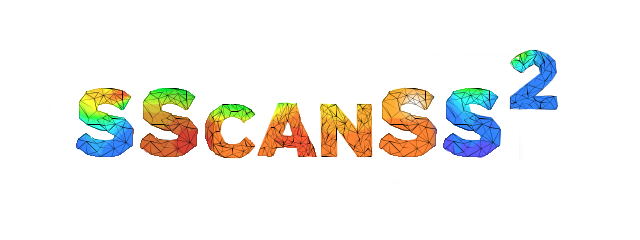

SScanSS 2’s Documentation¶
SScanSS 2 (pronounced “scans two”) provides a virtual laboratory for planning, visualising, and setting-up strain scanning experiments on engineering beam-line instruments. SScanSS 2 which is an acronym for Strain Scanning Simulation Software uses a computer model of the instrument i.e. jaws, collimators, positioning system and 3D model of the sample to simulate the measurement procedure.The main output of the simulation is a script that can be used to drive the real-world positioning system to the desired measurement positions.
SScanSS 2 is a rewrite of the SScanSS application developed by Dr. Jon James at the Open University in collaboration with the ISIS neutron facility.